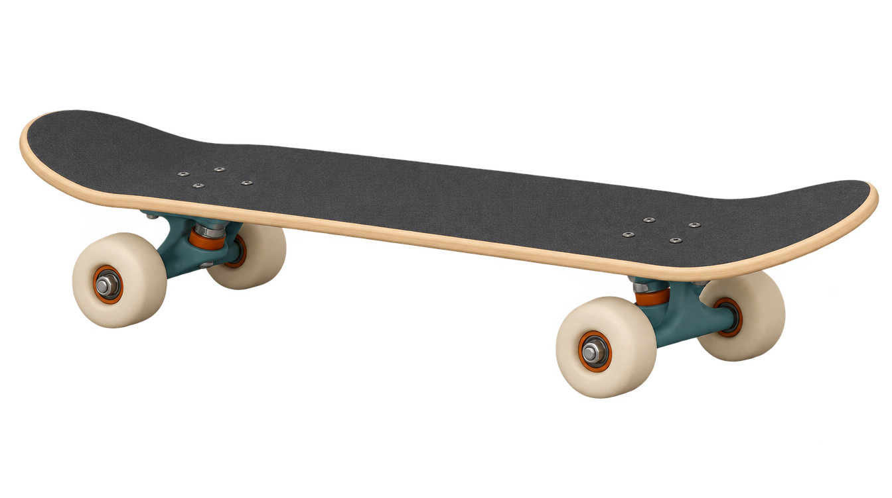
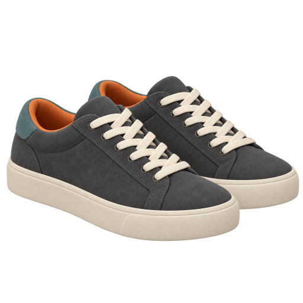
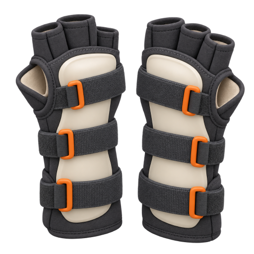
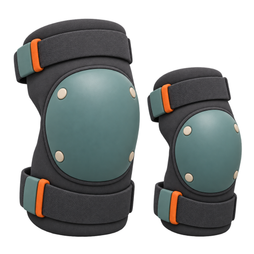
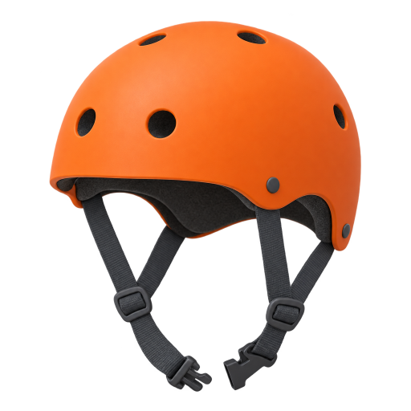

HALLMARK 14 · NARRATIVE WORKFLOW / BROADSIDE THEME
HOW TO SKATEBOARD: THE FOUR SKILLS
KNOW YOUR BOARD
Eight bolts anchor the trucks to the maple deck. The nose points in your direction of roll; the tail curves up to allow pop and clearance. Grip tape holds rubber soles firmly.
RULE ZERO: Always wear helmet, wrist guards, and pads before stepping on the grip. Flat rubber-soled skate shoes are non-negotiable.
1.0
FIND YOUR STANCE
Feet set across the width of the board over the bolts. Bend knees low. Practise stationary on grass first.
2.0
PUSH OFF
Point front foot towards nose over front bolts. Push steadily with back foot. Bring rear foot on deck and pivot.
3.0
LEAN TO TURN (CARVING)
Press toes to carve toe-side; lean heels to carve heel-side. The urethane truck bushings steer smoothly.
4.0
FOOT BRAKE TO STOP
Rotate front foot forward. Lower rear foot to asphalt and drag sole with increasing pressure until halted.